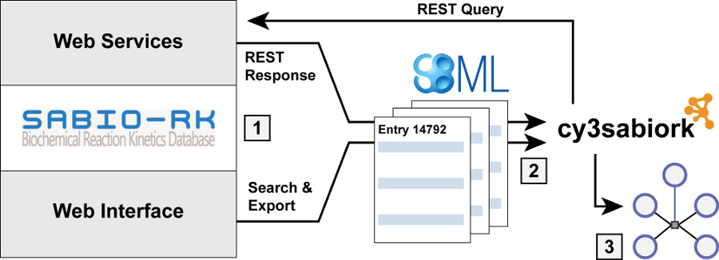
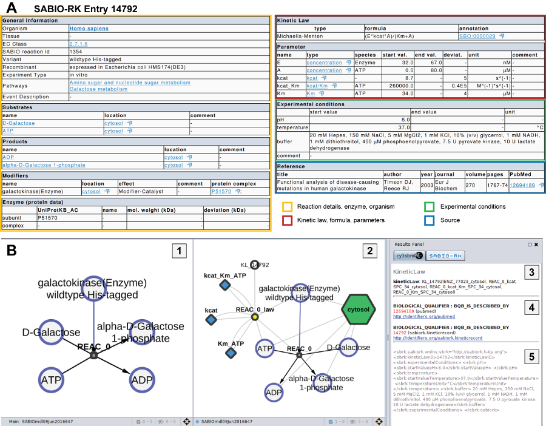

A Cytoscape app for visualizing kinetic data from SABIO-RK.
cy3sabiork provides access to SABIO-RK information via their web services. The typical workflow consists hereby of:

An overview of the available kinetic information for a single SABIO-RK Kinetic Law is given below. The
entry 14792 for galactokinase (EC:2.7.1.6, UniProtKB:P51570) was retrieved via the web service query kineticLaws/14792
(http://sabiork.h-its.org/sabioRestWebServices/kineticLaws/14792).

Entries for given Kinetic Law Ids can be retrieved via the Kinetic Law Entries tab. Copy and paste or type kinetic law ids in the text box and click add to add them to the query. Click run to run the query and load to load the entries in Cytoscape.
For instance retrieving a single entry via
kineticLaws/14792 or multiple entries via
kineticLaws?kinlawids=48020,49160,44091,48027.
SABIO-RK entries can be searched based on combinations of keyword:term searches. The keywords are identical to those used in the web interface for forming queries. Multiple keyword:term fields may be combined using the AND operator to form complex queries. After creating the query it is executed by clicking run. The resulting entries are loaded in Cytoscape by clicking load.
For instance find all Kinetic Law Entries for spleen in Homo sapiens: searchKineticLaws/sbml?q=Tissue:"spleen" AND
Organism:"Homo sapiens"
The following keywords may be used to form queries to search for entries:
| Entry | |
EntryID |
SABIO-RK entry ID (e.g. searchKineticLaws/sbml?q=EntryID:"123") |
| Reaction/Pathway | |
Pathway |
The name of the reaction pathway (e.g. searchKineticLaws/sbml?q=Pathway:"urea cycle") |
KeggReactionID |
KEGG ID for the reaction (e.g. searchKineticLaws/sbml?q=KeggReactionID:"R00782") |
SabioReactionID |
SABIO-RK ID for the reaction (e.g. searchKineticLaws/sbml?q=SabioReactionID:"14") |
| Compound | |
AnyRole |
Compound found in any role in a reaction (e.g. searchKineticLaws/sbml?q=AnyRole:"oxygen") |
Substrate |
Compound acting as a substrate in a reaction (e.g. searchKineticLaws/sbml?q=Substrate:"ATP") |
Product |
Compound acting as a product in a reaction |
Inhibitor |
Compound acting as an inhibitor modifier in a reaction |
Catalyst |
Compound acting as a catalyst modifier in a reaction |
Cofactor |
Compound acting as a cofactor in a reaction |
Activator |
Compound acting as an activator in a reaction |
OtherModifier |
Compound acting as a modifier not specified above, in a reaction |
PubChemID |
PubChem ID of a compound |
KeggID |
KEGG ID of a compound |
ChebiID |
Chebi ID of a compound |
SabioCompoundID |
|
| Enzyme | |
Enzymename |
An enzyme may included in the search parameters by name (e.g.
searchKineticLaws/sbml?q=Enzymename:"galactokinase")
|
ECNumber |
An enzyme may included in the search parameters by EC Class number (e.g.
searchKineticLaws/sbml?q=ECNumber:"1.1.1.2")
|
UniProtKB_AC |
Protein as listed in UniProtKB (e.g. searchKineticLaws/sbml?q=UniProtKB_AC:"A1VCV2") |
EnzymeType |
Type of the enzyme, only valid queries are EnzymeType:"mutant" or EnzymeType:"wildtype"
|
| Biological Source | |
Tissue |
The name of the tissue (e.g. Tissue:"liver") |
Organism |
The name of the organism (e.g. Organism:"homo sapiens") |
CellularLocation |
Location within the cell that a kinetic reaction takes place (e.g. CellularLocation:"leucoplast")
|
| Kinetic Data | |
Parametertype |
Experimental parameter specified in the kinetic law entry (e.g. Parametertype:"Vmax")
|
KineticMechanismType |
Mechanism for the kinetic data (e.g. KineticMechanismType:"rapid equilibrium") |
AssociatedSpecies |
Species which is associated with a parameter (e.g. AssociatedSpecies:"ATP" |
| Publication | |
Title |
Publication within which the kinetic law data is published, by title |
Author |
Publication within which the kinetic law data is published, by author (e.g. Author:"Shelton
E")
|
Year |
Year of publication (e.g. Year:"2010") |
PubMedID |
Publication within which the kinetic law data is published, by PubMed ID (e.g. PubMedID:"13538975")
|
InfosourceType |
Source of the data, valid queries are InfosourceType:"Journal" or InfosourceType:"direct
submission" |
DateSubmitted |
Earliest possible date from which the entry exists in SABIO-RK (e.g. DateSubmitted:"27/10/2010")
|
| Range options | |
TemperatureRange |
Range of temperatures (e.g. TemperatureRange:"[36.9 TO 37.1]") |
pHValueRange |
Range of pH values (e.g. pHValueRange:"[6.9 TO 7.1]") |
| Boolean options | |
hasKineticData |
Entry specifies a rate equation (e.g. hasKineticData:"true") |
IsRecombinant |
Entry has recombinant data (e.g. IsRecombinant:"false") |